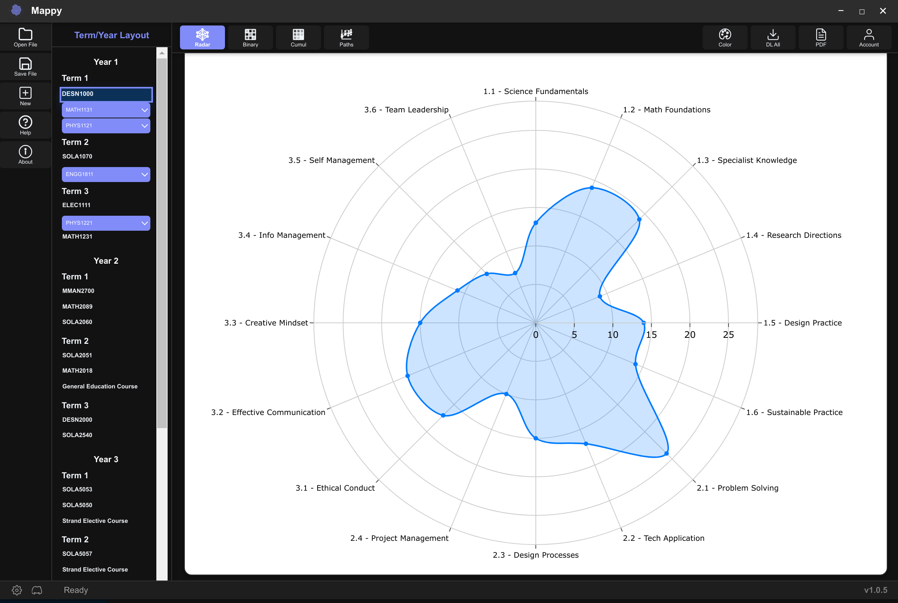
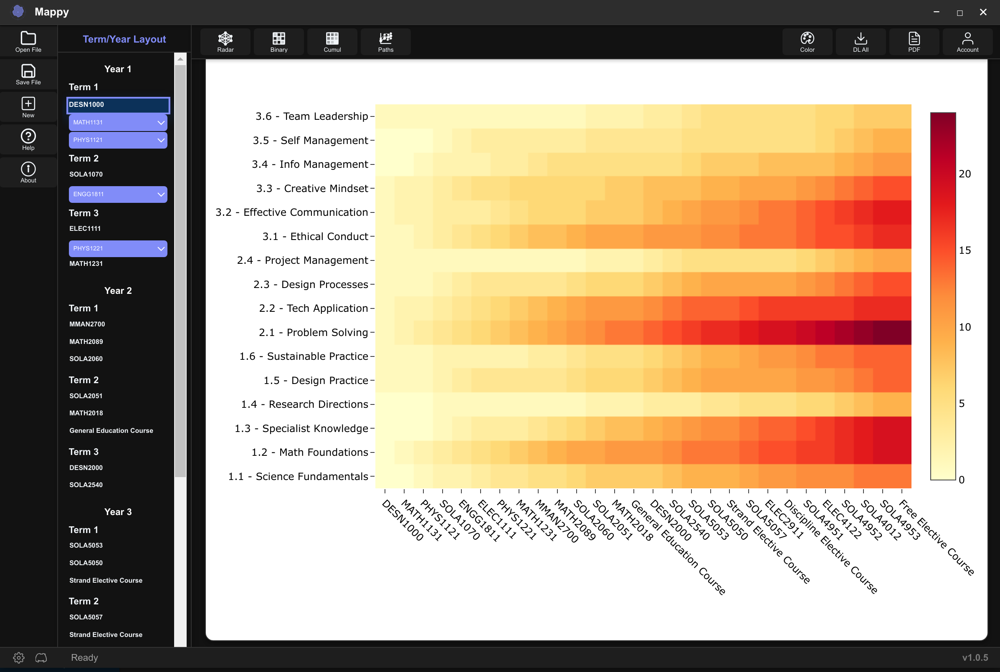
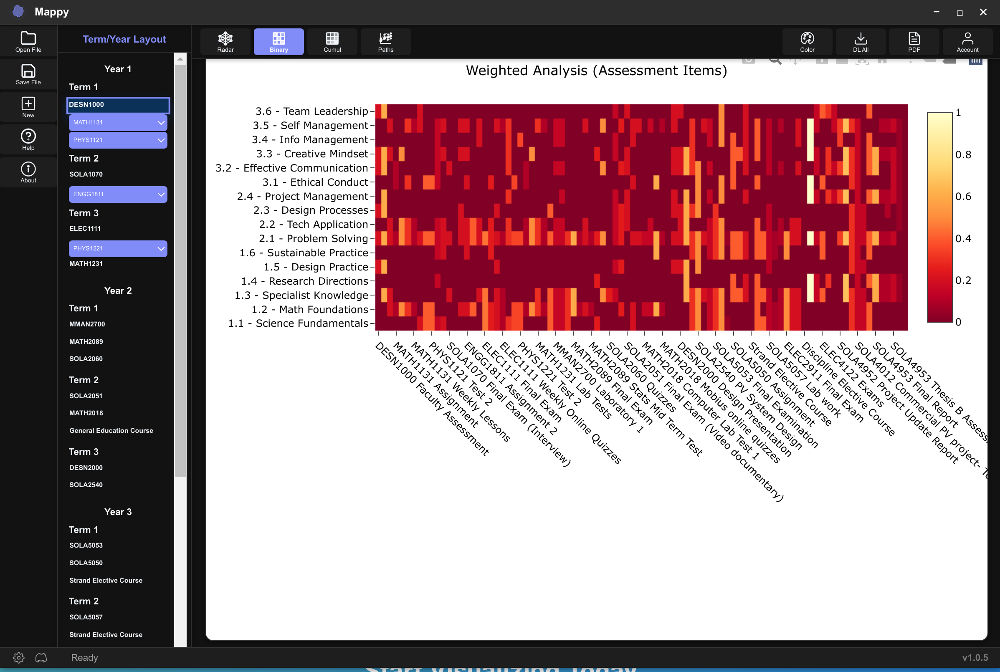
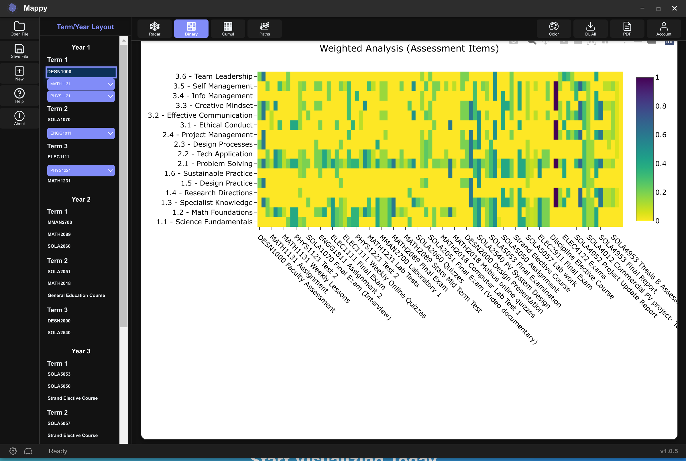
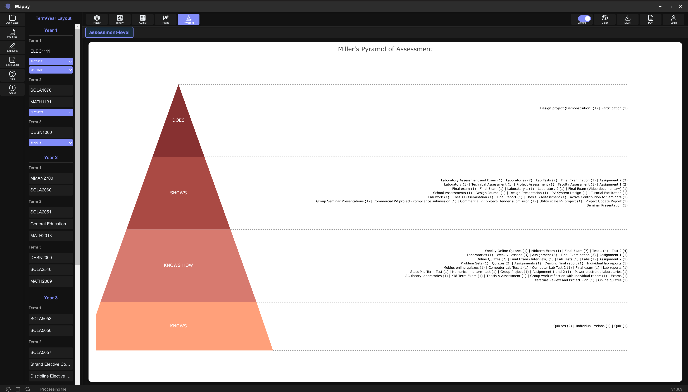
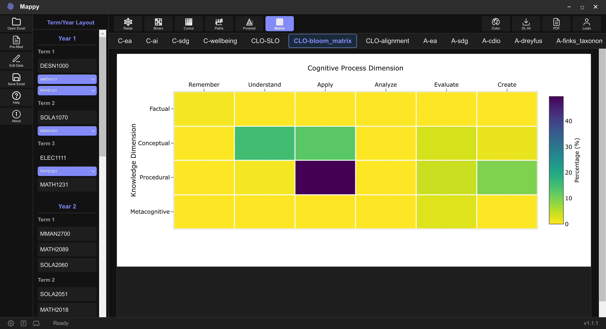
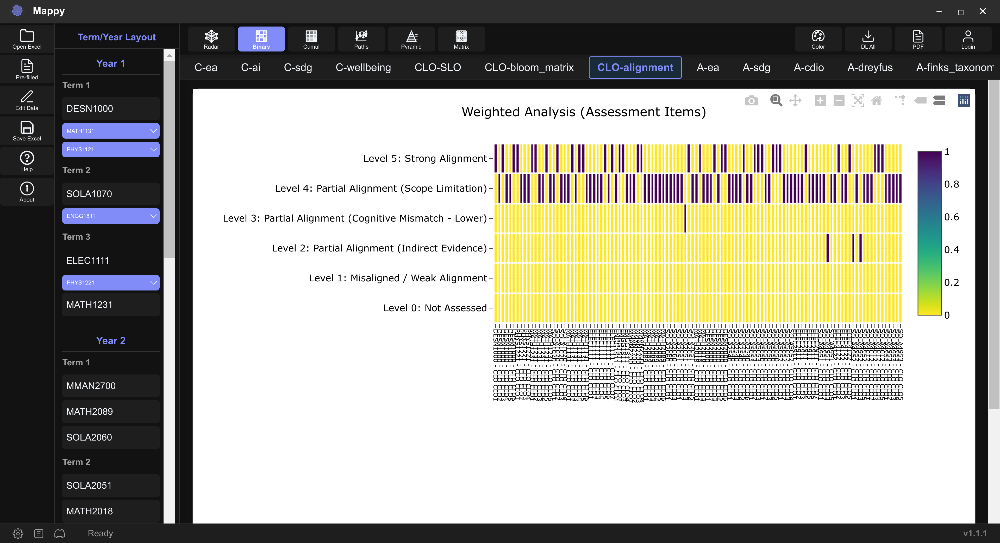

Mappy Intelligence
Make curriculum intentional, transparent and improvable across the whole university, not just visualised.
See what you teach, why you teach it, and how it develops students over time.


Make curriculum intentional, transparent and improvable across the whole university, not just visualised.
See what you teach, why you teach it, and how it develops students over time.

Empower universities to build coherent, outcomes-aligned curricula that develop students purposefully from first year to graduation.

All visualisations in Mappy are interactive, allowing you to hover for details, filter by learning outcome areas, and identify patterns across your curriculum. Easily track how outcomes develop throughout a program sequence.
Strategic curriculum purposes for academic leaders, program directors, and quality teams
See where outcomes are introduced, practised, and assessed across every stage of a program.
Visualise how learning develops across course sequences, from foundational to advanced levels.
Test elective pathways to ensure every student meets program requirements regardless of course selection.
Visualise representation and modality distribution across curriculum to support inclusive education.
Generate curated data exports and visual summaries for review panels and compliance reporting.
Track changes and map decisions across curriculum versions to support ongoing quality enhancement.
Mapping reveals how knowledge builds across a program (vertical alignment) and how content fits together within a single year or stage (horizontal alignment). This dual perspective is a core purpose of curriculum maps and is essential for designing coherent programs.
Vertical alignment ensures that each course builds on prior learning and prepares students for what comes next, creating a logical progression from introductory to advanced levels.
Horizontal alignment ensures related courses taught concurrently reinforce and complement each other rather than duplicating effort.
Curriculum mapping highlights where assessments overlap, where important outcomes lack adequate assessment, and where students may face an unbalanced workload. By visualising assessment distribution, teams can reduce unnecessary assessments and improve alignment to intended outcomes.
This leads to more purposeful assessment design where every task is clearly connected to program-level goals, and students receive fair, balanced evaluation across their degree.
Mapping helps ensure students encounter outcomes when and how they should, rather than through ad hoc coverage. It surfaces whether foundational skills are genuinely established before more complex tasks are required.
When learning is sequenced intentionally, students build deeper understanding over time, moving through stages such as introduction, reinforcement, and mastery in a planned progression.
A well-maintained curriculum map provides tangible evidence of alignment, coverage, and progression that accreditation panels and academic review boards expect.
Beyond compliance, it supports an ongoing culture of improvement: teams can compare versions over time, track the rationale behind curriculum decisions, and demonstrate that changes are evidence-based rather than ad hoc.
Curriculum mapping is the systematic documentation of what is taught, when it is taught, and how it is assessed within and across programs. It provides a visual roadmap that improves alignment, coherence, and educational quality.
Identify outcomes that are missing from the curriculum or inadequately addressed, then take targeted action to close those gaps.
Check that learning builds logically across years (vertical) and that related courses at the same level complement each other (horizontal).
Use mapping data to drive curriculum decisions grounded in evidence rather than anecdote, supporting both accreditation and quality improvement.
Mappy offers flexible visualisation options to suit your specific curriculum analysis needs. Filter by outcome areas, adjust colour schemes, weight analysis by assessment items, and generate focused reports for different audiences and purposes.


| Feature | Decision it supports |
|---|---|
| Outcome heatmaps | Identify under- or over-represented skills and learning outcomes |
| Elective scenario modelling | Ensure all pathways satisfy outcome coverage |
| Assessment weighting visuals | Balance formative vs summative emphasis |
| Taxonomy progression traces | Check if learning deepens appropriately over time |
| Flexible exports | Generate evidence for review and planning discussions |
Prioritise curriculum analysis based on assessment importance, distinguishing between formative exercises and high-stakes evaluations.
Personalise colour schemes for different reporting needs, making your curriculum visualisations both accessible and meaningful.
Save visualisations as images or export raw data for further analysis in your preferred applications.
Model various student pathways through your curriculum by toggling elective courses. Instantly see how different course selections impact outcome coverage, helping you design balanced program options and advise students on optimal course selections.
Model different course selection pathways to ensure all students meet programme goals regardless of which electives they choose.
Identify potential outcome gaps created by specific elective combinations and proactively address them in your curriculum design.
Analyse your curriculum through a family of lenses that can be applied dynamically, including learning outcomes and competencies, AI readiness, Sustainable Development Goals, and wellbeing. Each lens reveals a different dimension of your program's design and impact.
Track learning outcomes, program outcomes, and discipline-specific competencies across your curriculum to ensure comprehensive coverage.
Understand how your curriculum prepares students for AI-transformed professions and builds AI literacy.
Map how your courses contribute to the UN SDGs, preparing students to address global challenges.
Ensure your curriculum supports student wellbeing and creates an inclusive learning environment where all students feel they belong.
Map your curriculum against established educational taxonomies including Bloom's Taxonomy, SOLO, Miller's Pyramid, Dreyfus Model, and Krathwohl's Affective Domain. Ensure progression from basic knowledge to advanced mastery across your program, and track threshold and spiral structures.

Classify learning objectives from remembering and understanding through to evaluating and creating, ensuring appropriate cognitive demand at each level.
Track progression from surface to deep learning using the Structure of Observed Learning Outcomes framework.
Assess clinical competence progression from 'Knows' and 'Knows How' to 'Shows How' and 'Does'.
Map skill development from novice to expert levels across your curriculum progression.
Address emotional and value-based learning from basic reception to complex internalization.
Visualise threshold concepts and spiral structures to confirm that learning deepens appropriately from introductory to capstone stages.
Visualise the alignment of your course learning outcomes with established frameworks and pedagogical approaches.


How universities use Mappy to strengthen their curricula
Produce clear, visual evidence of outcome coverage and alignment for accreditation panels and external reviewers.
Support periodic program reviews with data-driven insights into where curriculum changes will have the greatest impact.
Verify that every graduate pathway delivers on promised program-level outcomes, regardless of elective choices.
Compare outcome structures across faculties to support credit transfer, dual degrees, and shared curriculum initiatives.
Provide structured evidence for internal quality cycles and external audit requirements.
Join our waiting list to get early access to Mappy Intelligence and transform your curriculum into a strategic asset.
Join Waiting List